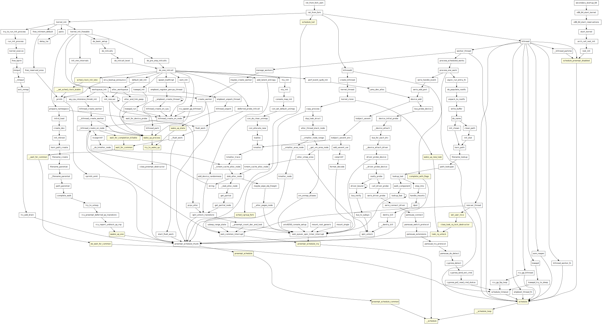

Optional: Understanding the Linux Scheduler
Warning
This task is for your self-exploration only. You are not required to submit any answers for this task. It is not graded and does not contribute to your final mark.
Note
You will be working with Linux kernel version 6.7.0. Download the kernel configuration file from here. Since this kernel is intended for use with QEMU only, support for VirtualBox shared folders, etc., is not required.
Ensure the downloaded configuration file is placed in the root directory of the
kernel source tree and rename it to .config. Then proceed to build the kernel
using the command make -j$(nproc).
After that, execute the following command to generate the vmlinux-gdb.py file:
Code Browsing
There are several tools available to assist you in navigating the kernel source code. You may find this page helpful for an overview of these tools.
For this task, I recommend using clangd in conjunction with VSCode. clangd
offers the advantage of interpreting the kernel's build configuration, providing
relatively accurate code navigation features. When combined with VSCode, you
can easily navigate through the kernel source code. Additionally, code disabled
by macros in the kernel configuration file will appear greyed out, allowing you
to focus on the active part of the code.
However, if you prefer using other editors or IDEs, you are free to do so. You
can refer to this page for a list of
other editors/IDEs compatible with clangd.
Below is a brief guide to setting up clangd and VSCode. For more detailed
instructions, you can search the web or ask ChatGPT for assistance:
- Build the kernel on your Linux machine as usual.
- Run
./scripts/clang-tools/gen_compile_commands.pyin the kernel source tree to generate thecompile_commands.jsonfile. - Install VSCode on your local machine.
- Install the "remote-ssh" extension in VSCode.
- Connect to the VM using the "remote-ssh" extension in VSCode.
- Install the "clangd" extension from the Extension marketplace in the VM.
- Use "open folder" to open the kernel source tree in VSCode.
- Open a C file within the kernel source tree. If
clangdis not installed, you will receive a prompt at the bottom-right corner of the window asking you to installclangd. Click "Install" to proceed.
Note: If you have the official "C/C++" extension installed, you may need to
disable it to prevent conflicts with clangd.
Once set up, you can open the file kernel/sched/fair.c at line 13073, where
the object for the fair scheduling class is defined. You will notice that many
fields are greyed out, indicating that they are disabled by macros in the kernel
configuration file.
In the object, you will see several functions wrapped between #ifdef
CONFIG_SMP and #endif, which are disabled by the CONFIG_SMP macro.
Question
When CONFIG_SMP is disabled, what feature is lost?
How does this simplification aid in analyzing the scheduler?
Attaching GDB to the Kernel
You've already learned how to attach GDB to the kernel via QEMU in the previous assignment.
Below is a Makefile to automate the process of attaching GDB to the kernel:
KERNEL_DIR = ../linux-6.7
bzImage = $(KERNEL_DIR)/arch/x86/boot/bzImage
vmlinux = $(KERNEL_DIR)/vmlinux
qemu:
qemu-system-x86_64 \
-s -S \
-nographic \
-kernel $(bzImage) \
-append "nokaslr console=ttyS0"
gdb: vmlinux-gdb.py
gdb $(vmlinux) -x gdbinit
vmlinux-gdb.py:
ln -s $(KERNEL_DIR)/scripts/gdb/vmlinux-gdb.py .
Make sure to update the KERNEL_DIR variable to the path of your kernel source
tree.
The gdbinit file contains the following commands:
You can now use make qemu to start the QEMU instance and execute make gdb in
another terminal to attach GDB to the QEMU instance. When GDB is launched, it
will execute the commands specified in the gdbinit. These commands include a
hook to terminate QEMU when GDB is exited and establish a connection between GDB
and the QEMU instance.
Should you encounter a warning indicating "auto-loading has been declined," it
suggests that the script vmlinux-gdb.py provided by the kernel was not loaded
successfully. This script offers a range of commands to streamline kernel
debugging. For more information regarding this script, please refer to this
page.
Follow the instructions provided in the warning message to resolve the warning.
Drawing a Call Graph
To gain a better understanding of how things work, we can create a call graph for a specific function of interest.
For instance, if we want to understand how the __schedule function is invoked,
we can follow these steps:
- Launch the kernel and attach GDB to it as described previously.
- Set a breakpoint at the beginning of the
__schedulefunction. - Execute the
continuecommand to allow the kernel to run. - When the breakpoint is hit, execute the
btcommand to print the call stack, revealing the call path to the__schedulefunction. - Repeat the process several times to collect multiple call paths to the
__schedulefunction. - Use a Python script to parse the collected call paths.
Here are some helpful tips:
- Use the "logging" feature of GDB to dump the outputs to a file.
- Define a
"hook" in
GDB so that it automatically executes the
backtracecommand when the breakpoint is hit.
Then by setting the breakpoint and repeating the continue command, you can
collect the call paths. Once the call paths are collected, you can use a Python
script to parse them.
The provided Python script prints a dot script. You can use Graphviz to generate the diagram from the dot script using the following command:
You can replace the svg in the command with other formats such as png or
pdf to generate the diagram in different formats. Additionally, feel free to
modify the provided script to meet your specific requirements, or explore
alternative methods to generate the call graph.
Here's an example of the call graph for the __schedule function:

Question
Please create a call graph illustrating the invocation of the
place_entity
function.
Ensure the diagram is generated in PDF format and include it in your submission.
Inspecting the Fair Scheduler
In this task, we will concentrate on a subset of methods utilized within the fair scheduler. These methods are as follows:
DEFINE_SCHED_CLASS(fair) = {
.enqueue_task = enqueue_task_fair,
.dequeue_task = dequeue_task_fair,
.yield_task = yield_task_fair,
.wakeup_preempt = check_preempt_wakeup_fair,
.pick_next_task = __pick_next_task_fair,
.put_prev_task = put_prev_task_fair,
.set_next_task = set_next_task_fair,
.task_tick = task_tick_fair,
.task_fork = task_fork_fair,
};
This setup reflects an object-oriented programming approach in C.
Please analyse the provided methods within the setup. Determine the functionality of each method and identify when they are typically called. You can consult with ChatGPT or Copilot on this.
After analysing the call graph generated in the previous part, it's evident that
the place_entity function is invoked from 2/3 distinct paths:
kernel_clone→copy_process→task_fork_fair→place_entitywake_up_new_task→activate_task→enqueue_task_fair→place_entity
try_to_wake_up→activate_task→enqueue_task_fair→place_entity
Path 1 primarily deals with the creation of a new task, while Path 2 focuses on awakening a previously sleeping task.
Please review the source code of place_entity to discern how it behaves
differently between the two types of incoming tasks during placement.
Question
Please provide a brief explanation of the differences in the behaviour of
place_entity between the two types of incoming tasks.
Another observation is that place_entity is called twice for each new task
created. Is this a bug or a feature? Please provide a brief explanation.
Hint:
- Use the techniques we've covered to help figure out the behaviour.
- When you use GDB to debug the kernel, you can use
$lx_current()to get the current task and$lx_per_cpu("runqueues")to get the runqueues. These are useful helpers provided by thevmlinux-gdb.pyscript.
Question
Is calling place_entity twice for each new task created a bug or a feature?
Please provide a brief explanation.
Hint: https://lore.kernel.org/all/20231023154319.102437-1-daniel.m.jordan@oracle.com/T/#u